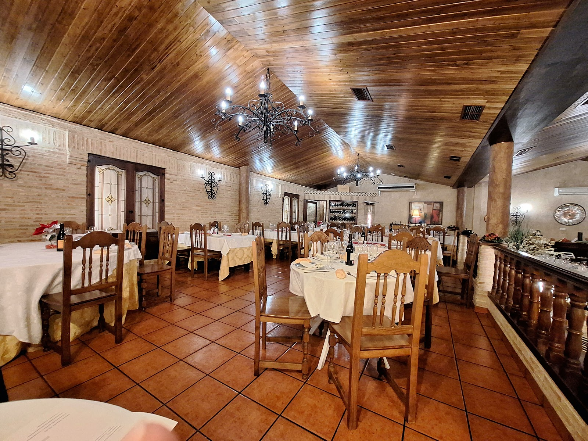
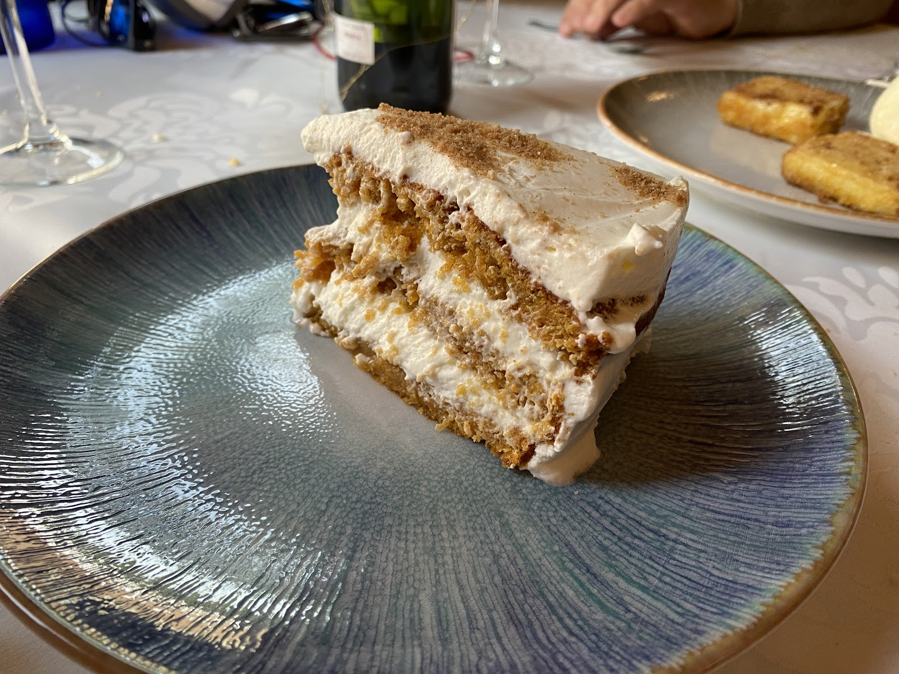
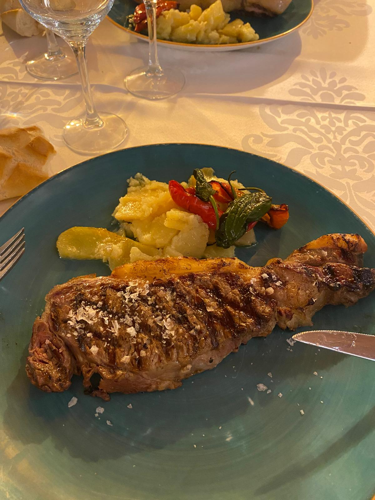

Disfruta de la mejor cocina casera en nuestro amplio salón rústico con techos de madera y lámparas de forja.

Situados en el corazón de Navalcarnero, en la Calle de El Escorial, El Caserón de los Arcos te recibe en un amplio salón rústico donde los techos de madera y las lámparas de forja crean un ambiente cálido e inolvidable. Somos el punto de encuentro perfecto para quienes buscan cocina casera de verdad, elaborada con producto de primera calidad y acompañada de una gran bodega. Nuestro equipo de sala ofrece un trato cercano y espectacular para que cada visita sea una experiencia única.


Una selección de platos elaborados con producto de primera y alma tradicional.
Carta de ejemplo: al entregar la web ponemos vuestros platos, precios y alérgenos (obligatorios por ley), y podéis cambiarlos cuando queráis.
Reserva tu espacio en El Caserón de los Arcos y asegura una experiencia inolvidable.
Se ruega puntualidad en la llegada para poder ofrecerles el mejor servicio en sala.
Disfruta de la mejor cocina casera en nuestro amplio salón rústico con techos de madera y lámparas de forja.
Un espacio amplio y acogedor con techos de madera y lámparas de forja para disfrutar en buena compañía.
Platos tradicionales elaborados sin pretensiones, destacando el producto auténtico y los sabores de siempre.
Una selección cuidada de caldos para maridar a la perfección cada uno de nuestros platos principales.
Disfruta de una excelente relación calidad y precio con múltiples opciones a elegir que incluyen pan, bebida y postre.
Nuestro equipo de sala cuida cada detalle para ofrecerte un servicio atento, familiar y verdaderamente espectacular.
El lugar ideal en Navalcarnero para celebrar tus reuniones familiares o comidas con amigos en un entorno único.
Valoramos la cocina de verdad con ingredientes excepcionales y una excelente relación calidad precio.
Nuestro salón rústico con forja y madera ofrece un espacio cálido difícil de superar en Navalcarnero.
Los camareros aseguran un trato excelente que hace que todos nuestros clientes deseen repetir muy pronto.
Disponemos de una amplia lista de platos principales para todos los gustos y preferencias.
Fotos de Google Maps: Rocío Montesino, Julián Mora Lucas, Aroa P, Candela Abad
Ponte en contacto con nosotros para asegurar tu sitio en nuestro amplio salón rústico.
Ubícanos en la Calle de El Escorial para comenzar tu experiencia gastronómica.
Déjate aconsejar por nuestro personal y selecciona entre nuestra carta o el menú del día.
Saborea la cocina casera de verdad en un entorno cálido, tradicional y con gran bodega.
4,5 / 5 · 1182 opiniones en Google
«⭐⭐⭐⭐⭐ Tradición pura, buen producto y gran bodega "Descubrimos El Caserón de los Arcos por recomendación y superó las expectativas. Es el lugar perfecto si buscas cocina casera de verdad, sin pretensiones pero con muchísimo sabor. Se nota el mimo familiar en la gestión y el respeto por la tradición vinícola de Navalca»
Andrés Pérez prados · Hace 3 meses · Google«Difícil de superar el menú de este restaurante en cuanto a calidad/precio. ¿Vieiras en un menú de 21,5 euros? ¿Magré de pato? Sí. ¿Secreto 5 jotas? Sí, también. Y una larga lista de platos que en otros restaurantes tendrían suplementos. ¿Quieres postres? Escoge el que quieras de la carta, que también entra. Y el café, »
Aleix Peix · Hace 3 meses · Google«El trato de los camareros espectacular, nos ha encantado y estaba todo súper rico de verdad. Volveremos dentro de poco sin duda! Mucha calidad en todos los ámbitos.»
Candela Abad · Hace 6 meses · Google«Buen restaurante en Navalcarnero. Salón grande y acogedor. Buen menú con muchos platos a elegir donde incluye pan, bebida y postre. El servicio bien, con algún patinazo (un plato que dijo que llevaba dos carabineros, en realidad eran gambas) Dispone de parking propio y gratuito. Merece la pena. Recomendable.»
El Nécora · Hace 8 meses · Google«⭐⭐⭐⭐⭐ Tradición pura, buen producto y gran bodega "Descubrimos El Caserón de los Arcos por recomendación y superó las expectativas. Es el lugar perfecto si buscas cocina casera de verdad, sin pretensiones pero con muchísimo sabor. Se nota el mimo familiar en la gestión y el respeto por la tradición vinícola de Navalca»
Andrés Pérez prados · Hace 3 meses · Google«Difícil de superar el menú de este restaurante en cuanto a calidad/precio. ¿Vieiras en un menú de 21,5 euros? ¿Magré de pato? Sí. ¿Secreto 5 jotas? Sí, también. Y una larga lista de platos que en otros restaurantes tendrían suplementos. ¿Quieres postres? Escoge el que quieras de la carta, que también entra. Y el café, »
Aleix Peix · Hace 3 meses · Google«El trato de los camareros espectacular, nos ha encantado y estaba todo súper rico de verdad. Volveremos dentro de poco sin duda! Mucha calidad en todos los ámbitos.»
Candela Abad · Hace 6 meses · Google«Buen restaurante en Navalcarnero. Salón grande y acogedor. Buen menú con muchos platos a elegir donde incluye pan, bebida y postre. El servicio bien, con algún patinazo (un plato que dijo que llevaba dos carabineros, en realidad eran gambas) Dispone de parking propio y gratuito. Merece la pena. Recomendable.»
El Nécora · Hace 8 meses · GoogleRecomendamos reservar previamente para asegurar su mesa, especialmente durante los fines de semana.
Sí, contamos con un completo menú diario con numerosos platos a elegir que incluye pan, bebida y postre.
Disponemos de alternativas en carta y podemos adaptarnos a sus necesidades si nos avisa con antelación.
Por supuesto, nuestro amplio salón rústico es ideal para acoger reuniones familiares y de amigos.
Nos encontramos en la Calle de El Escorial, número 25, en la localidad madrileña de Navalcarnero.
Cuéntanos qué necesitas y te respondemos lo antes posible.